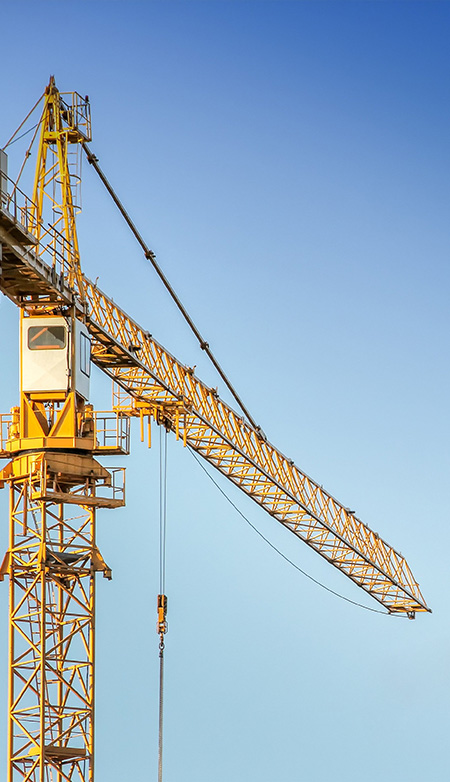
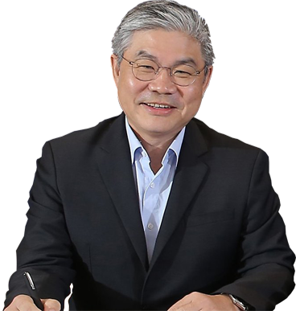

home > 기업소개 > 대표이사 인사말
대표이사 인사말

- 대한민국을 건설해온 sk c&c의
열정으로 세계를 선도할 건설 리더가 되겠습니다
- SK건설은 1977년 창립한 이래 고객의 신뢰에 보답하고자 성실하고 우수한 프로젝트 수행을 통해 인프라, 건축/주택, 플랜트 사업에서 지속적인 성장과 발전을 거듭하고 있습니다. 국내는 물론 세계적으로 그 기술력과 시공능력을 인정받고 있는 SK건설은 인프라분야에서 도로, 철도, 항만 등의 국가기간산업 건설과 건축/주택분야에서의 프리미엄 주거공간의 창출 및 대형 개발사업 등의 참여로 국내외에서의 입지를 굳건히 하고 있습니다. 또한, 플랜트분야에서는 지구촌 곳곳에서 대형 석유화학 및 발전, 반도체 시설 등 다양한 프로젝트 수주와 성공적인 시공을 통하여 세계적인 업체들과 어깨를 나란히 하는 Global Player로서 업계를 선도해 가고 있습니다.
- 이제 SK건설은 지금까지의 성장과 발전에 만족하지 않고, 더 큰 미래를 착실하게 준비하고 있습니다. 세계 일류 도시개발 및 인프라 구축회사라는 비전을 세우고 해외 시장 확대 및 New Product 진출을 통해 미래 성장동력을 확보함과 동시에, 기업가치 제고를 위한 사업구조 전환을 목표로 개발사업을 확대하고 Portfolio를 전환하여 수익구조의 질적 개선을 추구하고 있습니다. 뿐만 아니라, 사내 System 및 Process, 인사제도 등의 고도화를 통한 선진 Infra 구축을 성공적으로 완수하여, Global 경쟁력을 갖추고 세계 초일류 기업으로 성장할 수 있는 확고한 도약의 발판을 구축하고 있습니다
ske&c를 방문해주셔서 감사합니다.

sk건설 대표이사 안재현